3 Open science for impactful products
3.1 Goals and motivation
This is the third module in our workshop on open science. Now we focus on how Quarto can be used as a document preparation system to generate easily shared web content.
- Goal: understand best practices for reproducible documents using Quarto
- Motivation: cultivate your analyses as living, shared resources
3.2 Quarto
Quarto is a relatively new document preparation system that lets you create reproducible and dynamic content that is easily shared with others. Quarto is integrated with RStudio and allows you to combine plain text language with analysis code in the same document.
Quarto belongs to a class of reporting tools called dynamic documents or literate programming. It is not the first of its kind, but it builds substantially on its predecessors by bridging multiple programming langues.
Advantages of creating analyses using Quarto include:
- Clear demonstration of a workflow using plain text and code
- Reproducible materials allows others to use your work
- Easily shared content (e.g., on GitHub)
This next section will run through the very basics of creating a Quarto document, some of the options for formatting, and how to generate shared content. You’ll follow along in this module.
Create a new project in RStudio, first open RStudio and then select “New project” from the File menu at the top.
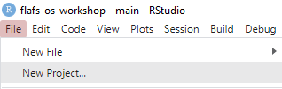
Then select “New Directory”. Create a directory in a location that’s easy to find.
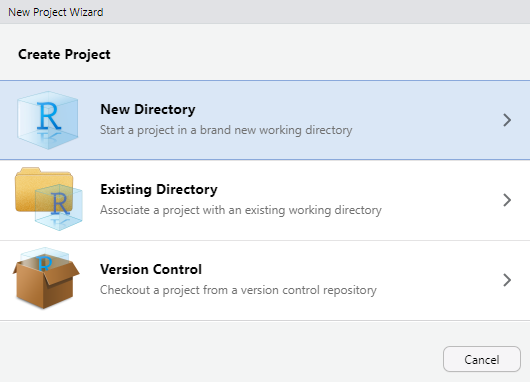
Open a new Quarto file from the File menu under “Quarto Document”.
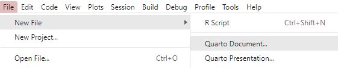
Enter a title for the document (e.g., “Quarto practice”) and your name as the author. Use the defaults for the other options and hit “Create”.
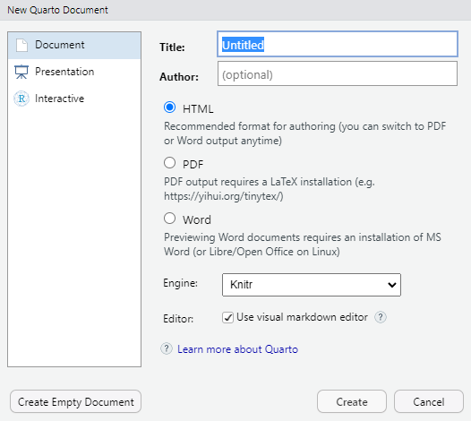
Save the file in the project root directory (give it any name you want).
Let’s get familiar with the components of a Quarto document.
The file is completely empty except for the title, name, and source at the top. The content at the top is called YAML, which defines global options for the document.
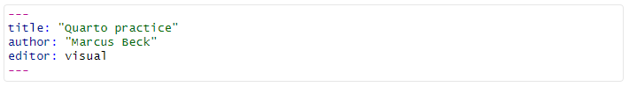
You’ll also notice that there’s a button on the top-left that lets you toggle between “source” or “visual” editor mode. The source editor simply lets you add text to the document, whereas the visual editor lets you add content that is partially rendered. First time Quarto users may prefer the visual editor.
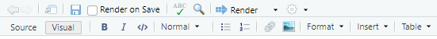
Using the visual editor, we can insert a code chunk (or code cell). This can be done by selecting the appropriate option from the Insert menu. Note the variety of programming langues that can be used with the code chunk.
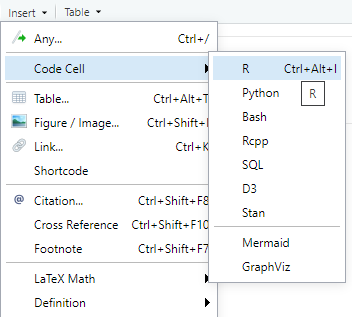
We can enter any code we want in the code chunks.
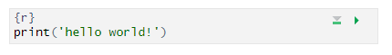
When the file is rendered, the code is run and results displayed in the output. There are many options to change how code chunks are executed, which we’ll discuss below.
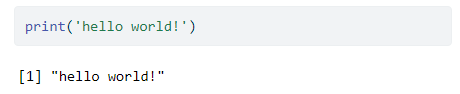
We can also run the code chunks separately without rendering the file. This can be useful for evaluating your code as you include it in the file.
Descriptive text can be entered anywhere else in the file. This is where we can describe in plain language what our analysis does. Text can be entered as-is or using simple markdown text for formatting appearance of the text output. If you’re using the visual editor, you can use some of the items in the file menu to modify the text appearance. It will look somethign like this in the source editor.
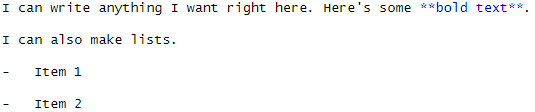
When the file is rendered, the markdown text will be formatted.
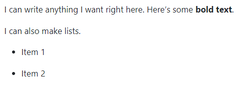
Render the .qmd file to the output format.
The source file is a .qmd document. We need to render the document to create the output format - HTML, PDF, or Word. The following happens when you hit the render button at the top.

Here’s what your RStudio session should look like. The rendered HTML file (the defaul format) will appear in th Viewer pane.
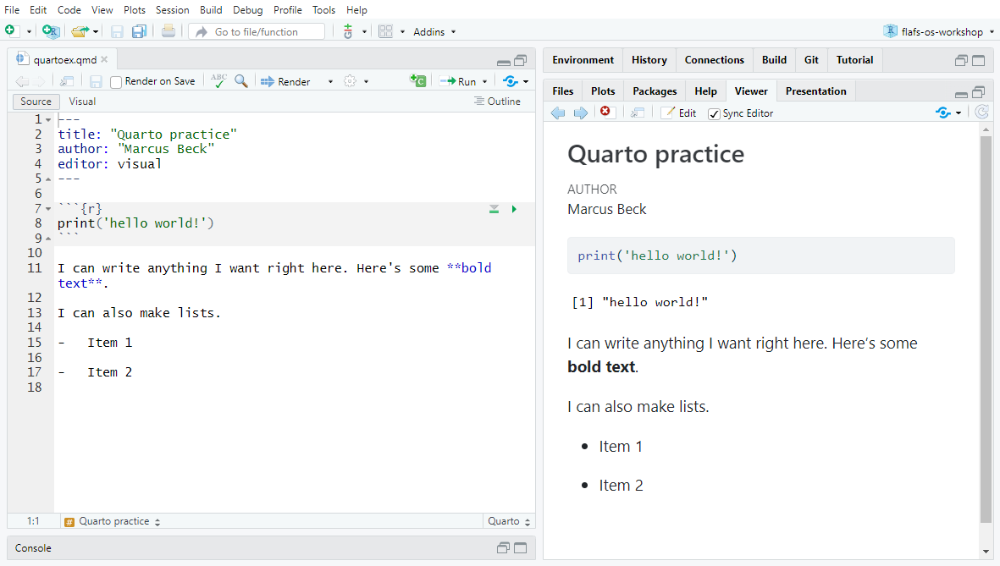
3.2.1 Code chunk options
echo, eval, warning, messages
figures and tables
3.2.2 Output options
html, pdf, word
3.2.3 Markdown syntax
Basics and inline code